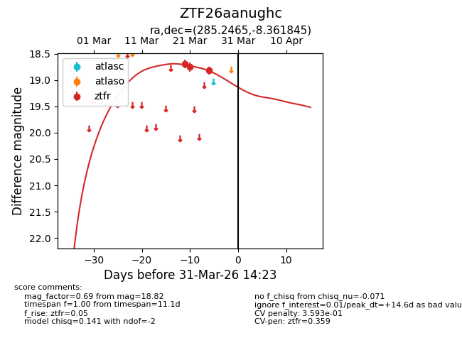
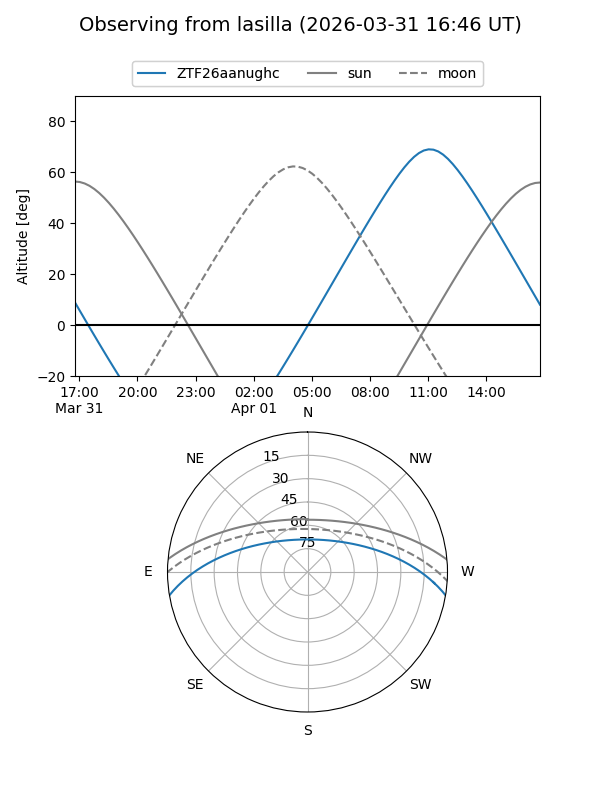
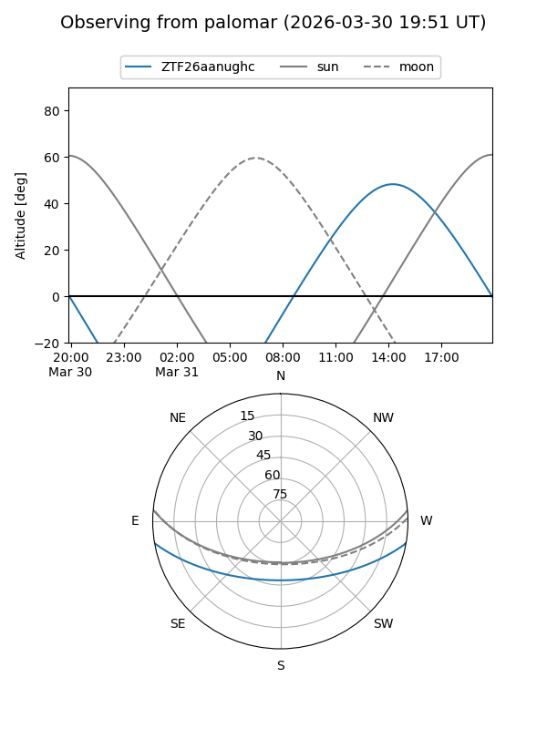
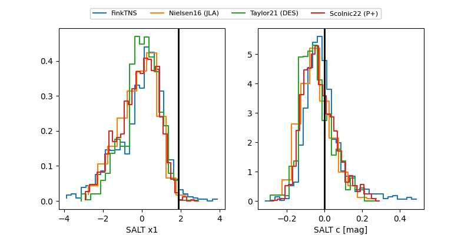

ZTF26aanughc
Target ZTF26aanughc at 2026-03-31 14:26
Aliases and brokers:
FINK: link
Lasair: link
ALeRCE: link
alt names
ZTF26aanughc (ztf,fink_ztf)
Coordinates:
equatorial (ra, dec) = 285.2465,-8.36184
equatorial (HMS+DMS) = 19:00:59.16,-08:21:42.64
galactic (l, b) = (26.5458,-5.91106)
Flags:
likely cv
Photometry:
last ztfr=18.82
3 ztfr detections
Lightcurve

Visibility


Additional plots
